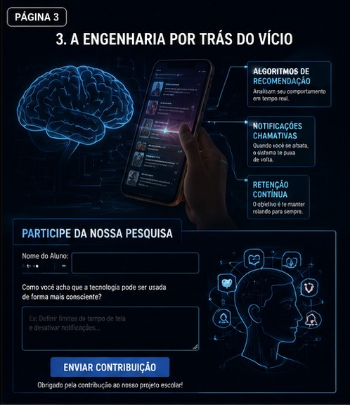
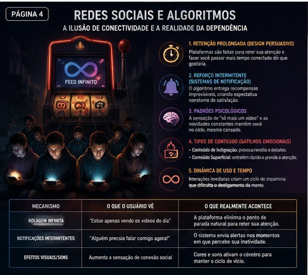

Redes Sociais e Algoritmos
A Ilusão de Conectividade e a Realidade da Dependência

Como isso afeta o cérebro? (A Psicologia por Trás)
Todas as plataformas digitais de engajamento são projetadas para reter a atenção do usuário. Isso significa que, em média, as pessoas passam mais tempo conectadas do que gostariam. O app pode oferecer conteúdos úteis de vez em quando, mas no longo prazo, busca reter o tempo total do usuário.
Embora as redes sociais dêem a impressão de interação espontânea, a entrega do conteúdo é controlada por inteligência artificial. O algoritmo determina quando e qual postagem te trará satisfação, criando expectativas constantes de recompensa.
Os aplicativos são projetados para serem altamente envolventes e costumam criar a sensação de "só mais um vídeo". Sons suaves, curtidas e novidades constantes fazem o usuário sentir que algo importante acontecerá a qualquer segundo. Esse reforço mantém o usuário rolando a tela mesmo cansado.
Os algoritmos distribuem conteúdos variados para capturar a atenção com base em emoções:
- Conteúdo de Indignação: Postagens polêmicas que geram comentários rápidos e debates inflamados.
- Conteúdo Superficial: Vídeos curtos e rápidos que mantêm o usuário entretido enquanto o tempo passa sem perceber.
O design é feito para incentivar a navegação sem pausas. As interações são imediatas, criando um ciclo contínuo de liberação de dopamina que dificulta o desligamento da mente.
| Mecanismo | O que o usuário vê | O que realmente acontece |
|---|---|---|
| Rolagem Infinita | "Estou apenas vendo os vídeos do dia" | A plataforma elimina o ponto de parada natural para reter sua atenção. |
| Notificações Intermitentes | "Alguém precisa falar comigo agora!" | O sistema envia alertas nos momentos em que percebe sua inatividade. |
| Efeitos Visuais/Sons | Aumenta a sensação de conexão social | Mecanismos criados para ativar áreas do cérebro associadas ao vício. |
| Velocidade de Feed | Entretenimento dinâmico e rápido | Quanto mais rápido o consumo, maior o impacto no foco e na concentração. |
